Table of Contents 2
1 Introduction 3
2 How does it work 4
3 Installation 5
4 DCMStarter 5
5 DCMDesktop 6
6 The Inventory 7
6.1 Adding Servers 7
6.2 Inventory (Populated) 8
6.3 Importing Servers (CSV) 9
6.4 Servers Imported 10
7 The Poller (DCMPoller) 10
8 The Navigator (Trend Analysis) 11
9 Trend Analysis 12
10 The Commander 13
11 The Admin 14
11.1 DCM Users 14
11.2 License 14
11.3 System Properties 14
11.4 Backup 14
12 Logging 15
13 DCMClient – DCMServer 15
14 Trial 15
1Introduction
DatacenterManager is a state of the art, fully automated Inventory & Performance Monitoring / Trend Analysis Tool (build in Java) that can inventorise your UNIX servers in seconds (without installing extra software on your servers, just by using SSH and plain old UNIX commands).
Your entire datacenter can be automatically inventoried by only supplying hostname, username & password for each server, either “one by one” or via an automated CSV host-list import file.
Virtually every large company has performance issues that usually arise from years of increased datacenter complexity and change in usage. Different root causes of performance bottlenecks dynamically float across your infrastructure, making it almost impossible to catch by hand in time.
Manual diagnoses just isn't fast enough finding performance bottlenecks before they disappear.
Most companies fail to improve business performance and give up and give in to frustration.
DatacenterManager was especially designed to accurately inventory and monitor / poll your server's resources and historically (maintenance free) store the recorded performance data for later inspection by powerful Trend Analysis Comparison against the usual workload baselines.
DatacenterManager's clever poller design makes the operational impact almost unnoticeable.
The Navigator offers easy and powerful multi-server resource querying and swift time navigation through a seemingly endless line-graph by simple mouse-clicks on move and zoom buttons.
DCM's Navigator also let's you visualize growth expectancies used for Scalability Management.
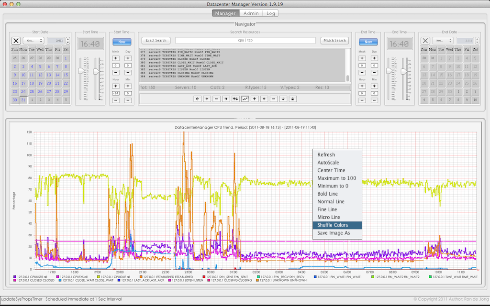
Figure
1.1
DCM interacts with your servers over encrypted SSH communication and does NOT use public key authentication as it is based on password authentication, by smart automated terminal interaction.
DCM and your UNIX System Administrators login and interact with your servers the same way.
The DCMPoller can process over 100,000 resources per minute from a simple desktop computer !
2How does it work
DatacenterManager is designed to make your life as easy as possible, being in control again.
DatacenterManager installs in under a minute and no server changes are required to operate.
Adding server(s) to DCM is done by just providing a hostname, username and a password.
DCM will then logon to your server(s), inventorise them and add them to the inventory.
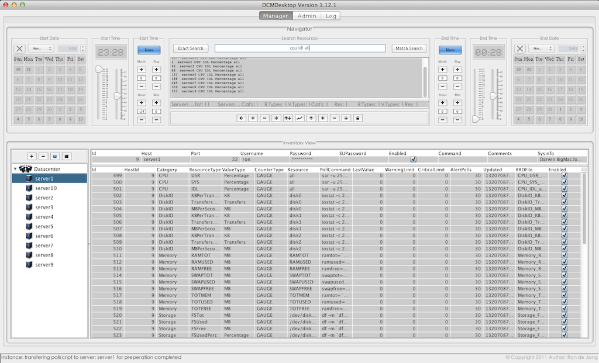
Figure
2.1
All servers and resources in the inventory will be polled every minute by the DCMPoller (performance data collector) in the background (when turned on) and continuously update the massive numbers of (maintenance free) Historical Data Archives, saved for at least one year.
After adding servers to the inventory you can generate on-demand graphs on any period and combination of resources by searching for the related server resources and turn them into graph. Searching for CPUIDLE (in general) gives you a single line-graph with e.g. hundreds of servers showing you instant datacenter CPU performance over any required period and value scale.
The DCM Navigator is a highly powerful search instrument, allowing you to select an absolute or relative period in time and any number of server-resources searching: “cpu” or “server1 diskio” or “solaris storage” and the next moment, you have your exact trend analysis or performance stats.
In the Trend View you can move left / right in time or zoom in / out in time, move up / down on the value scale or zoom in / or out on the value scale freely and your graphs are instantly and seamlessly updated as if your graph is an endless roll of film moving back and forth in time.
DCM has a standalone desktop application and a client – server application for multi-user and network distributed performance monitoring and management.
DCM also has a DatacenterCommander that allows automatic (parallel or sequential) execution of any custom command or shell script on a large amount of selected servers in just seconds !
3Installation
The installation footprint of DatacenterManager is very small, due to it's Java nature (< 20 MB).
Check that you have at least Java 1.5 or higher installed on your computer.
Download DatacenterManager (dcm_install.jar) to any location on your hard-disk.
Double click “dcm_install.jar” starting the self extractor and click the [Extract] button.
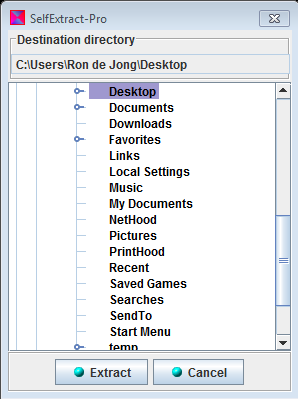
The installation is now completed and you are ready to start DCM the first time.
Go into the extracted “dcm” subdirectory and double click “DCManager.jar” to start DCM.
DOS prompt or Terminal can also be used to start DCM, type: java -jar DCManager.jar
Extra Information
Every server added to the DCM Inventory requires 250 MB – 8 GB, (depends on server “size”).
The data archives represent the historical data archives for every server added to DCM.
These large archive-directories are used by the following DCM components:
DCMPoller that collects performance data and stores it there.
DCMDesktop querying archive data to create graphs for Trend Analysis.
DCMClient querying archive data to create graphs for Trend Analysis.
The location of the data archives are: dcm\data\databases\DCMArchiveDB\
If you later run out of disk space, then you can move / copy the entire “dcm” directory to a different disk location or even a different computer and your done (no lengthy, risky or costly migration).
4DCMStarter
DatacenterManager isn't just one application, but several independently running applications.
The DCMStarter as a starting point, makes it easy to start the right DCM application for you.
Please notice the information at the bottom part while hovering over the component buttons.
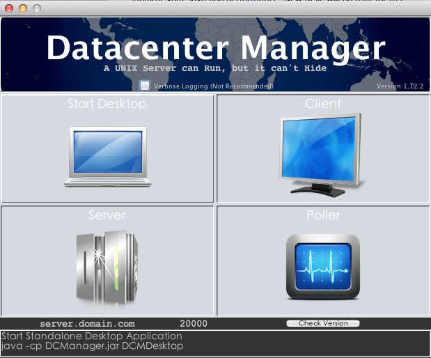
Figure
4.1
Please notice the “Version“ (upper right corner) and the “Check Version“ button (under Poller).
This allows you the see your current DCM version and check for newer DCM versions online.
Click the “Desktop” button and start the standalone Desktop application “DCMDesktop”.
The first time starting DCMDesktop takes a little longer creating the Inventory database.
Congratulations, you are now running the standalone DatacenterManager DCMDesktop.
Extra Information
DCM internally uses two different database systems (DCMDBServer) and (DCMArchiveDB).
DCMDBServer serves the DCM Inventory (datacenter server administration).
DCMArchiveDB serves the Server Historical Data Archives (Trend Analysis Data).
The DCMPoller & DCMCommander can also be started from the DCMDesktop interface.
More about DCMPoller and DCMCommander later in this document.
As a beginner you would only start the Desktop as that combines all other components together in one single / standalone desktop application.
5DCMDesktop
DCMDesktop starts (see figure 5.1) login with user: admin & password: admin.
F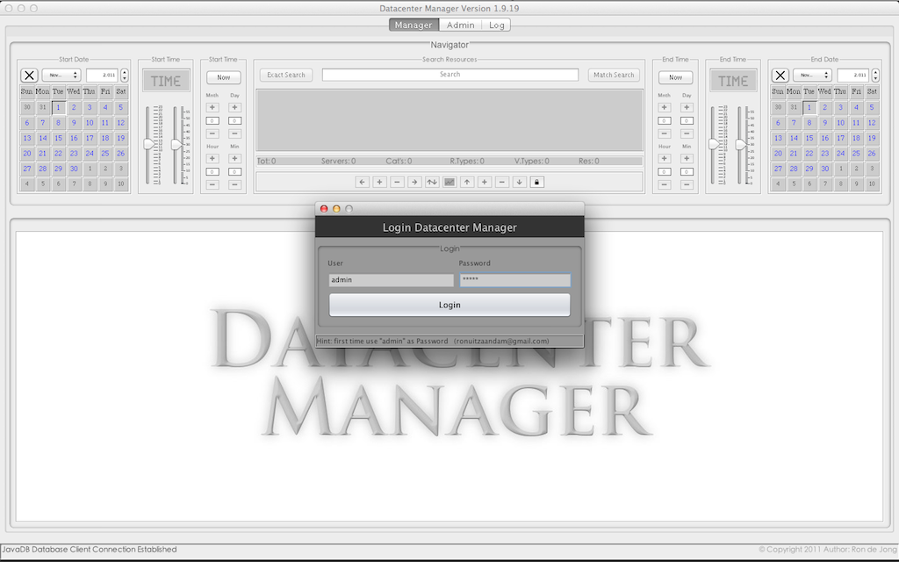
igure
5.1
An empty Inventory is shown (see figure 5.2) as no servers were added yet.
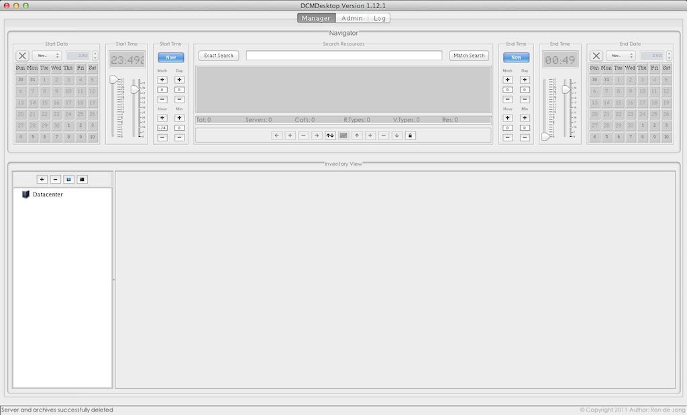
Figure
5.2
The upper part (calendars and everything in between) is what is called the “Navigator”.
6The Inventory
The Inventory holds the entire server & resources administration (not the DataArchives).
The Inventory currently supports the operating systems: AIX, HP-UX, Solaris, Linux & OSX.
At the lower part (the currently big empty spaces) is what is called the “View Area”.
The View Area shows two different views: Inventory View (servers) & Trend View (graphs).
DCMDesktop by default shows the Inventory (see Figure 6.1.2) and at the lower left part of the View Area you see the Inventory “Servers Tree” normally showing only server hostnames.
6.1Adding Servers
Right above the “Servers Tree” you see 4 small buttons (Figure 6.1.1):
F
igure
6.1.1
Tip: you can hold still your mouse above any button, field or widget to get more info.
Please click the [+] button to add a server to your Inventory (see Figure 6.1.1 or 6.1.2).

Figure
6.1.2
You will now see the “Add Server Form” that has two tabs called: [Servers] [Import]
By default the [Server] tab is shown with server fields like Hostname & Username etc.
Please fill in at least: Hostname, Username & Password and click the [Add] button.
DCM will now login to your server, inventorise it and add it to the Inventory Database.
Please see the (below) status-bar or Log Tab (at the top) to see more progression details.
If your server is to busy to respond in time then you can increase your Timeout (Sec).
6.2Inventory (Populated)
After adding your server you will see your added server in the Inventory View (see Figure 6.2.1)
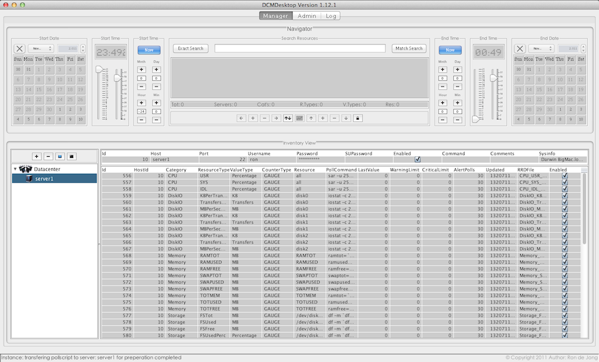
Figure
6.2.1
As you can see the Inventory View is now showing all your server details and server resources.
The left side “Servers Tree” now selects and shows your newly added server's (hostname).
The right side shows the server's details in two sections (an upper and a lower section):
The Upper section shows (editable) host details like hostname, credentials, sys-info etc.
The Lower section shows a large (editable) table with related server resources.
As easy as you've just added a server, you can also delete the selected server(s).
Clicking the [-] button (next to the [+] button) shows you the delete server dialog.
Figure 6.2.2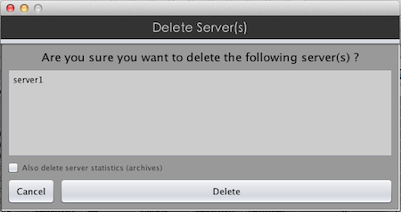
Before clicking the [Delete] button you can also delete the related (performance) data archives.
By default the server's data archives are not deleted as the server might be added again.
6.3Importing Servers (CSV)
Coming back to adding servers with the [+] button, you can also use the [Import] button.
The [Import] button allows you to import a CSV based file with servers for automatic inventory.
The Import Servers function can mass inventorise & add 100 server in approximately 17 minutes!
Click the [+] button right above the “Servers Tree” (again) and then click the [Import] tab.

Figure
6.3.1
Click the [Browse] button and a file browser / explorer appears for you to open the CSV file.
Use the file-explorer to locate and open your CSV file (if available ) and click [Open] → [Import].
Note the textfield [ , ] (next the [browse] button) allowing you to set a custom field separator.
Your servers are now automatically inventoried and added and you can monitor the import progress by following the Import Dialog line-selection and look at the DCMDesktop status-bar at the bottom.
Like the Add Server process, you can increase “Timeout (Sec)” if your servers are less responsive.
Here is an explanation of the plain text format of the CSV Servers Import file e.g. “myhosts.csv”:
Fields: Hostname,SSHPortnr,Username,Password,SuperuserPassword
Here's an Example:
server1,22,peter,petepass,
server2,22,peter,petepass,
server3,22,peter,petepass,
server4,22,peter,petepass,
server5,22,peter,petepass,
server6,22,peter,petepass,
server7,22,peter,petepass,
server8,22,peter,petepass,
server9,22,peter,petepass,
server10,22,peter,petepass,
The superuser password field is optional and therefore shows a last comma followed by nothing.
DCM is designed to require as little server access as possible to inventorise, poll or command.
6.4Servers Imported
Here's an Inventory with 10 servers added (please ignore the upper Navigator for now).
Figure
6.4.1
Please note that “Servers Tree” elements (on the left) can also be right clicked for extra functions.
As you might have already noticed, the server resources table shows editable columns with preset resource information in order to query and poll your resource(s). For advanced use by qualified personnel, these columns can be changed to e.g. influence the polling methodology of resources.
7The Poller (DCMPoller)
Now that you've added some servers to your Inventory, it is now time to start collecting (performance) data with the Poller (which runs as a non interactive background process).
You can disable polling of individual servers and resources by clicking the related checkboxes “Enabled” “on” or “off” in the DCMDesktop Inventory View → Host & Resources Table.
Either start the Poller from the DCMStarter window (as seen earlier at the start of this document) or click the little blue poller button (see Figure 7.1) at the white “Servers Tree” area on the left.
Remember you can hold still your mouse above buttons, widgets and fields to get more info.
F
igure
7.1
After clicking the poller button the poller background process starts, but not much is seen as it quietly runs in the background as a java or “javaw” process seen on (Microsoft Windows).
More information on the poller activity (verbose mode) can be obtained from the following directory:
dcm\data\log\<date>_<time>_DCMPoller.log
8The Navigator (Trend Analysis)
At this point your servers are added, your poller is running and after some time collecting performance data, it is time to see some line-graphs / statistics with the (upper) Navigator:
At first glance the Navigator looks a bit like an aircraft cockpit, but it just consists of Three parts:
Select Period (Start & End Time)
Search & Select Server Resources
Trend Analysis Navigation Buttons
Period Selection can be done two ways: Static or Dynamic (Absolute Time or Relative Time)
Static Period Selection (do this for Start and End Time):
F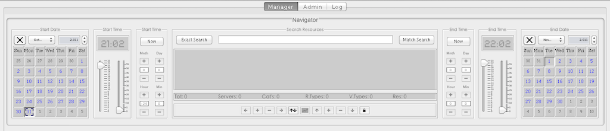
igure
7.1
Click the [Now] button until the Calendar and Time Picker are enabled.
Select a day in the calendar widget and adjust the hour/minute sliders.
Dynamic Period Selection (do this for Start and End Time):
Figure 7.2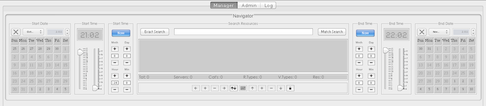
Click the [Now] button until the Calendar and Time picker are disabled
The [Now] button starts blinking and the offset fields (Month, Day, Hour, Min) enable.
Click the [+] or [-] buttons to offset the various time fields (offsetting from “Now” time).
Your Trend Period is now set and you can continue to searching for server resources.
Almost any column or anything you see in the inventory details can be searched for.
Type something like “cpu | stor perc” or “linux memory” and hit enter (Match Search)
Now the matching resources show right below in the selected resources area (editable).
Please note the double arrow button [up/down] that switches Inventory View with Trend View
The navigation buttons enable and you can now click the middle [Generate Graph] button.
F
igure
7.3
9Trend Analysis
After clicking the [Generate Graph] button, the lower View Area rolls up and a line-graph shows immediately, showing a graphical representing of your server resources over the period you set.
F
igure
9.1
The navigator arrow buttons allow you to quickly move / navigate through time and value.
Simply said move left / right (in time) move up / down in value scale (autoscale is default).
Zoom in / out period or zoom in / out on value scale to easily examine your suspect resources.
The [Generate Graph] button starts flashing “Video Wall Mode” (keeps refreshing every minute).
Making a “Right Click” on the Graph shows you a quick-menu with additional functionality.
DatacenterManager doesn't care how many resources you select in a single graph as long as your monitor allows for enough window-space to write the caption area inside the line-graph (bottom).
Trend Navigating is the fun part of DatacenterManager as it makes examining and comparing thousands of (multi-server performance) figures a child's play in the world of computer science.
DatacenterManager Trend Analysis allows you to also accurately anticipate on future scalability issues due to it's powerful and flexible navigation over any growth period for resources like e.g. storage (displayed in different value types like MB's or Percentages).
Endless of other possibilities open up with DatacenterManager as it doesn't stop with performance analysis, but also reaches far into incident and problem management e.g. detecting memory leaks datacenter wide within seconds or bandwidth or any other hardware resource over-utilization.
DatacenterManager does the hard and daunting technical work for you and lets you focus entirely on the essentials, identifying and fixing performance & capacity bottlenecks in no-time.
10The Commander
DatacenterManager wouldn't be called “Manager” if it could only view or monitor your servers.
DCM Users with “Admin” privilege can use a powerful integrated Commander, that is capable of fully automated execution of custom commands or scripts on selected servers from the Inventory.
Click the black terminal button on the right (see Figure 10.1)
Figure
10.1
The Search Servers field works similar to the Search Resources field in the Navigator, but instead it merely selects “servers” by searching through the entire Inventory's server details in the same way.
This allows you to do distinct searches for say: only x86_64 servers or only Linux servers or only servers that have “eth” or “en” network interfaces (resources) etc. etc.

Figure
10.2
The power doesn't stop there as the Commander allows (sequential and) parallel (or multi-threaded) execution, allowing you execute a script on e.g. 100 servers in less than 10 seconds.
11The Admin
11.1DCM Users
The DCMDesktop (and DCMClient) has an Admin tab at the top of the interface allowing you to:
Choose and apply your server license (Code)
Add, change or delete users and admin privileges.
Check the system properties in case needed.
Backup and Import the Inventory Database
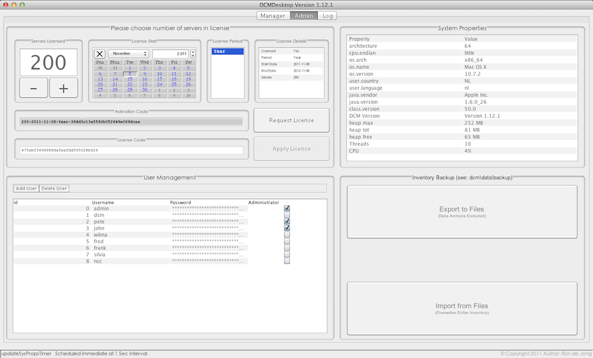
Figure
11.1.1
11.2License
In the upper left corner you can set the number of server licenses required to monitor and manage.
Next a calendar to set the License start date and next to that the License Period field and details.
The Demo License (Including 5 Server Licenses) works for a Lifetime and if free of charge !
11.3System Properties
At the right side System Properties are shown. (the DCMClient provides an extra server column).
11.4Backup
Backup provides CSV File Export and Import functionality for interfacing with other applications.
The Backup export and import (CSV) files are located at the (dcmhome): dcm\data\backup.
Please Note: Export doesn't include Data Archives and Import overwrites the Inventory Database.
12Logging
The “Log” Tab provides detailed information also stored at the: dcm\data\log directory.

Figure
12.1
When something doesn't work as expected, you can start the DatacenterManager components in verbose mode (see DCMStarter) (not recommended in operations) and check the verbose logs.
By default DCM disables debugging output (including Java stack traces). You can enable debugging output by starting from the command-line with the --debug parameter.
Example: java -cp DCManager.jar DCMDesktop [--debug] [--help]
13DCMClient – DCMServer
DatacenterManager also has an integrated multi-user Client – Server architecture.
The DCMClient allows your decentralized office users to connect to the central DCMServer.
This way you can also secure your office locations from direct login access to your datacenter(s).
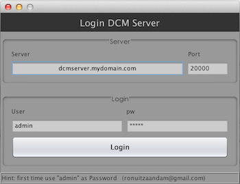
Figure
13.1
Notice the [Server] and [Port] field (Figure 13.1) used to logon to the DCMServer (over RMI).
14Trial
Coming this far, you're most likely interested and perhaps you want to Download en try DCM !
DatacenterManager was idealistically designed and developed without making compromises.